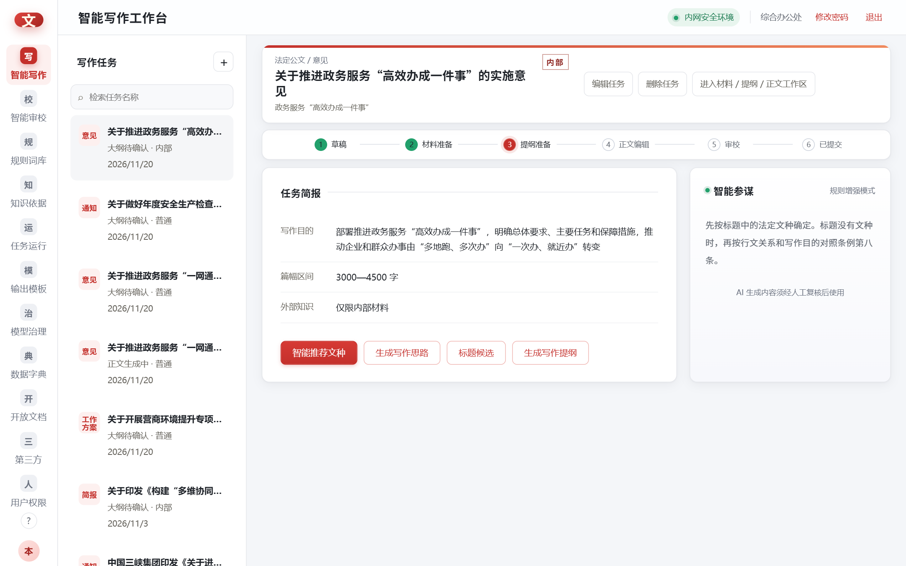
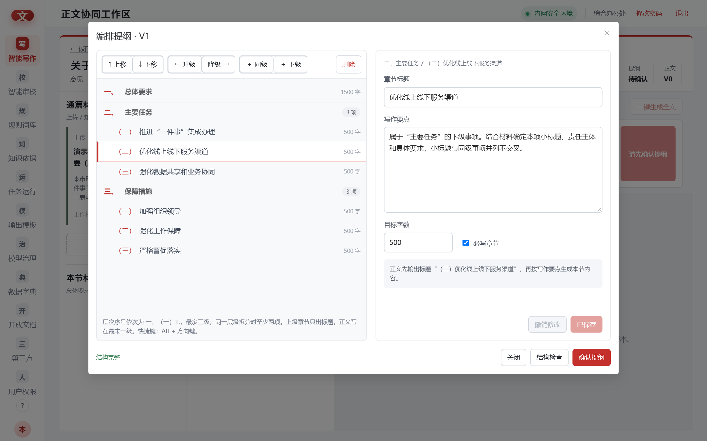
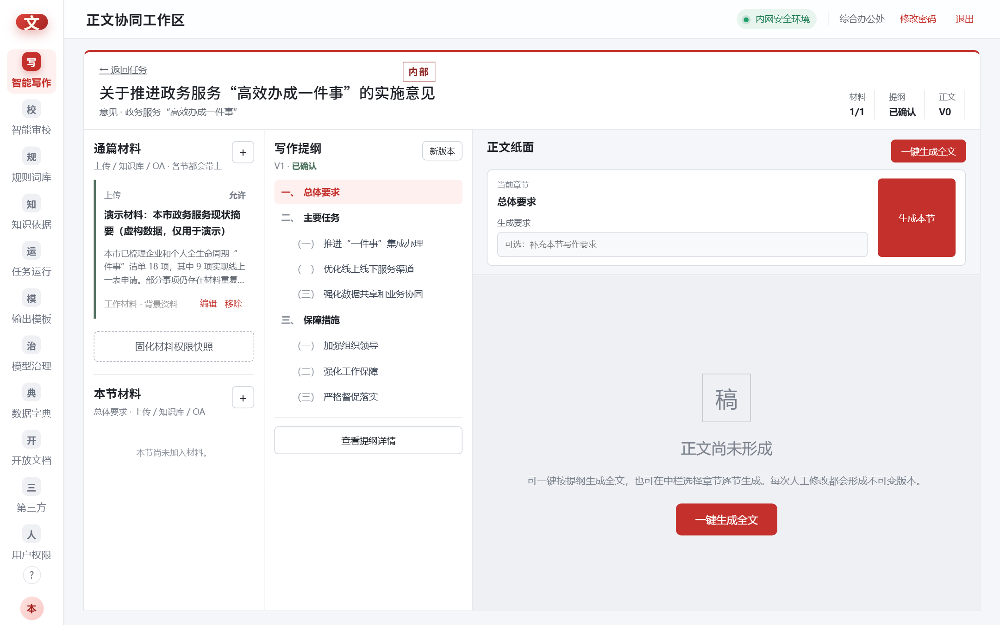
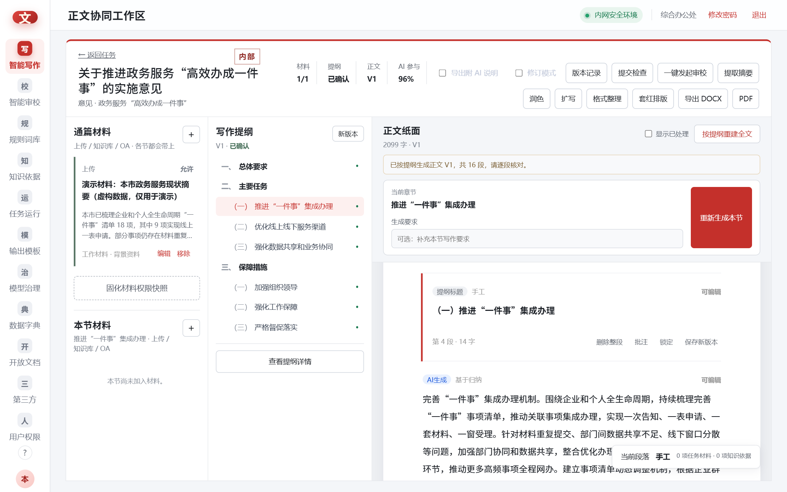
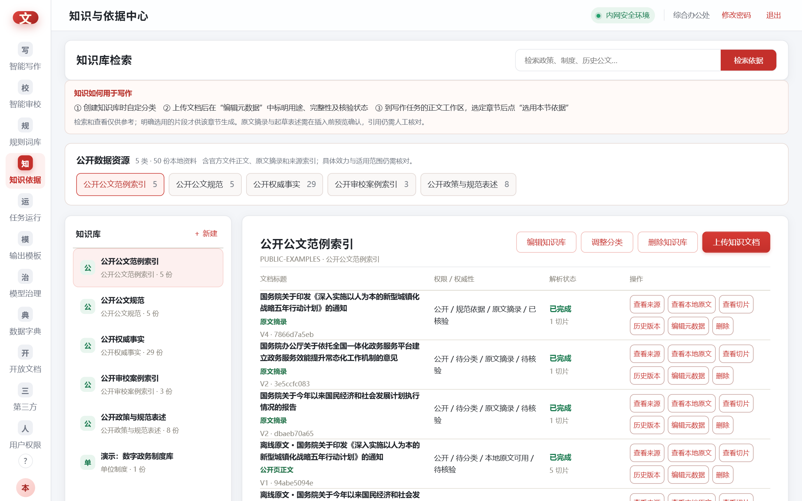
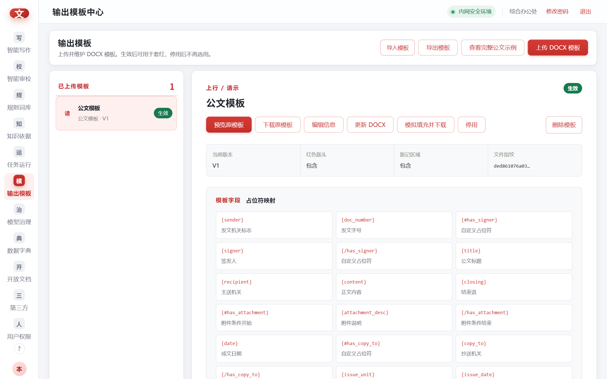
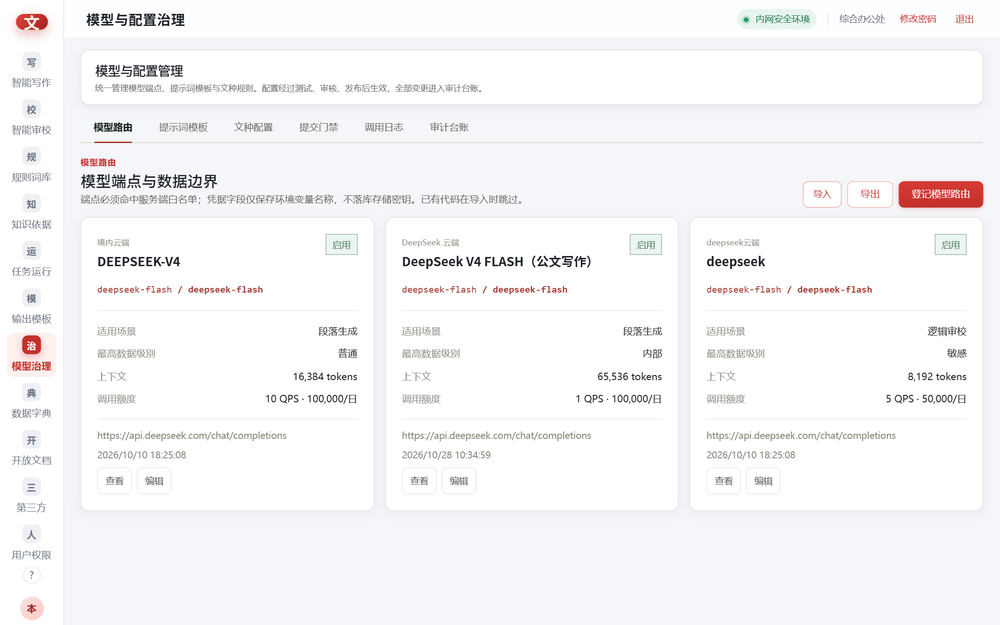
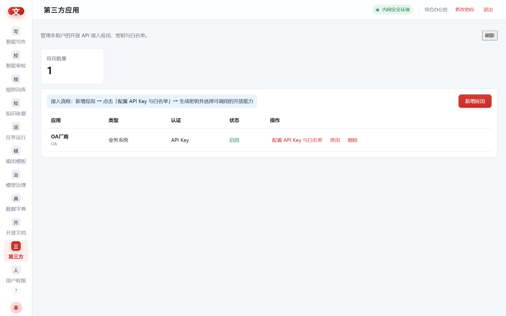

产品白皮书
从任务、材料、提纲到成稿、审校、套红的一体化公文生产平台
面向党政机关、事业单位和国有企业的内网公文场景。平台把 AI 生成能力放进规范的公文流程里：依据可查、版本可追、过程可审，最终由人工定稿。
版本 V2.02026 年 11 月内部资料 · 注意保管
目 录
- 一、背景与问题
- 二、产品定位与设计原则
- 三、总体架构
- 四、智能写作
- 4.1 写作任务与文种 · 4.2 材料与依据
- 4.3 分级提纲
- 4.4 一键生成全文与逐节生成
- 4.5 段落级协同编辑
- 五、智能审校
- 六、规则词库与知识依据
- 七、输出模板与套红排版
- 八、模型与配置治理
- 九、第三方系统集成
- 十、安全与合规
- 十一、部署与运维
- 十二、实施路径
- 十三、能力边界与使用约定
- 附录 A 支持文种清单
- 附录 B 开放接口清单
本白皮书所列界面均截取自平台当前版本的演示环境，示例文稿与材料为演示用虚构内容。文中涉及的数量（如文种数、规则数）以演示环境当前配置为准，实际部署可按单位要求增减。
PART 01
一、背景与问题
公文是机关依法行政和开展公务活动的重要工具。《党政机关公文处理工作条例》对公文种类、格式、行文规则和办理程序作了统一规定，GB/T 9704—2012《党政机关公文格式》对版式要素作了详细要求。规范性要求高、时效要求紧、材料来源多，是公文写作的常态。
起草环节的常见难点
起草耗时从领会意图、收集材料到搭建结构，初稿往往要反复多轮，长文种（意见、方案、报告、讲话稿）尤其明显。
结构与层次不规范“一、（一）1.（1）”层次序号错用、同级标题不并列、只有一个下级标题等问题较常见。
依据难核对引用的政策文件、数据和表述来源分散，核对出处和时效依赖人工记忆和检索。
多人修改版本混乱多轮修改通过文件来回传递，难以说清每一版改了什么、谁改的、依据是什么。
格式排版重复劳动红头、发文字号、主送、版记等要素需要按模板逐项调整，容易遗漏。
通用 AI 工具不适配外网工具存在数据出境和泄密风险；生成内容缺少依据标注，无法追溯，也不符合机关审核流程。
平台要解决的问题
政文智枢不是替代起草人的“自动写稿器”，而是一套把 AI 能力嵌入公文生产流程的工作平台：
- 流程化：按“任务—材料—提纲—正文—审校—排版—提交”组织工作，每一步都有明确的产出和确认点。
- 结构化：提纲按公文层次组织，正文按章节生成和修改，避免整篇一次性生成后难以调整。
- 可追溯：材料来源、生成记录、修改版本、审校问题和处理结果全部留痕。
- 可管控：模型、提示词、文种、规则和提交门禁统一配置，变更经过审核后生效。
PART 02
二、产品定位与设计原则
政文智枢定位为单位内部的公文生产与质量控制平台，既可作为独立的写作和审校工作台使用，也可作为能力底座被 OA 等业务系统调用。
面向的用户
起草人员建任务、组材料、编提纲、生成和修改正文，发起审校并按问题修改。
审核人员查看审校问题、批注、版本差异和 AI 参与说明，决定采纳或退回。
业务管理员维护规则词库、知识库、输出模板和文种配置。
系统管理员管理模型路由、第三方应用、用户权限与审计。
设计原则
| 原则 | 具体体现 |
|---|
| 人工定稿 | AI 只产出草稿和建议。提纲需人工确认后才能生成正文；审校问题需人工采纳、忽略或转人工；提交前可配置门禁检查。 |
| 依据可溯 | 材料标注权威级别与使用许可；正文段落记录生成来源；可在导出时附 AI 参与说明。 |
| 版本不可变 | 每次形成正文都会产生新版本，历史版本只读保留，可对比、可回看。 |
| 结构先行 | 先定提纲再写正文；提纲支持三级层次，并在确认前做结构检查。 |
| 内网部署 | 平台及数据部署在单位内网；模型服务可接入单位指定的私有化或合规云端模型。 |
| 模型可替换 | 按“场景 + 数据级别”路由到不同模型端点，更换模型不影响业务流程。 |
与通用写作工具的区别
通用对话式写作工具一次性生成整篇；依据不可见；修改靠反复对话；无版本与审计；数据边界不清晰；格式需手工调整。
政文智枢按提纲逐节或一键成稿；材料依据随段落记录；段落级编辑、批注和修订；版本与审计完整；按数据级别路由模型；模板套红直接输出 DOCX/PDF。
PART 03
三、总体架构
平台采用前后端分离的分层架构。业务模块之间通过明确的服务边界协作，模型、规则、模板等可变部分都以配置方式管理。
接入层
Web 工作台写作 · 审校 · 管理
开放 APIOA 等业务系统调用
文档在线编辑可选 OnlyOffice 集成
业务应用
智能写作任务·材料·提纲·正文
智能审校问题清单·报告
规则词库审校规则·标准词
知识依据知识库·检索·切片
输出模板DOCX 模板·套红
任务运行后台任务·进度
能力支撑
模型路由场景×数据级别
提示词模板版本化管理
文种配置结构·禁用表述
文档解析DOCX 读取与生成
数据层
PostgreSQL业务数据·版本
文件存储材料·模板·导出件
审计台账调用日志·变更记录
横向支撑统一身份认证
多租户隔离
角色与权限
数据密级
操作审计
健康检查
外部依赖模型服务（兼容 Chat Completions 接口规范）
技术选型
| 层次 | 选型 | 说明 |
|---|
| 后端 | Java 17、Spring Boot 3、MyBatis-Plus、Flyway | 模块化单体，数据库结构随版本自动迁移 |
| 前端 | Vue 3、Vite、Element Plus | 静态资源可由 Nginx 托管 |
| 数据库 | PostgreSQL | 可按单位要求适配其他兼容数据库 |
| 模型接入 | HTTP 方式调用模型端点 | 端点需在白名单内，凭据只引用环境变量名 |
| 文档 | DOCX 生成与解析，PDF 导出 | 模板占位符填充，可选在线编辑组件 |
国产化环境（国产 CPU、操作系统、数据库、中间件）适配需结合具体软硬件清单进行验证，本白皮书不对未经验证的组合作兼容性承诺。
PART 04
四、智能写作
写作模块围绕一份公文的完整起草过程设计。每份公文是一个写作任务，任务从草稿走到提交，状态清晰可见。
1建任务文种·目的·篇幅
›
2备材料来源·权威级别
›
3编提纲三级层次·检查
›
4成正文一键或逐节
›
5改正文段落·批注·修订
›
6审校问题清单·报告
›
7排版提交套红·门禁
4.1 写作任务与文种
新建任务时填写文种、写作主题、写作目的、主送机关、密级和篇幅区间。平台内置 27 个文种配置，覆盖条例规定的 15 种法定公文和 12 种常用事务文书（见附录 A）。每个文种配置了必备要素、推荐结构、禁用表述和结束语，用于提纲生成和审校。
任务简报区提供智能推荐文种、生成写作思路、标题候选、生成写作提纲等辅助操作，帮助起草人在动笔前理清思路。

图 4-1 智能写作工作台：任务列表、流程进度与任务简报
4.2 材料与依据
材料分为通篇材料和本节材料两级：通篇材料作用于全文，本节材料只用于指定章节。材料可来自本地上传、知识库检索或 OA 推送，每条材料标注权威级别（如政策依据、工作材料）、使用方式和使用许可。只有“允许”使用的材料才会进入生成上下文。
正式生成前可固化材料权限快照，确保正文生成所依据的材料范围在事后可核查。
4.3 分级提纲
公文的章节结构由提纲决定。平台支持最多三级的提纲层次，序号按公文惯例自动编排为“一、”“（一）”“1.”，正文中的层次标题与提纲保持一致。
一、总体要求
二、主要任务
（一）推进“一件事”集成办理
（二）优化线上线下服务渠道
（三）强化数据共享和业务协同
三、保障措施
（一）加强组织领导
（二）强化工作保障
（三）严格督促落实
长文种自动分层
意见、报告、工作方案、工作计划、工作总结、调研报告、汇报材料、领导讲话稿，以及篇幅在 4000 字以上的任务，生成提纲时会为“主要任务”“保障措施”“问题与对策”等章节自动拆出下级标题。请示、批复、函等短文种保持单级结构。
确认前的结构检查
- 一级章节不少于两个
- 层次不超过三级
- 同一层级拆分时至少两项，不出现“只有（一）没有（二）”
- 章节标题不为空
提纲编排在独立的编排窗口中完成：左侧是章节树，支持上移、下移、升级、降级、新增同级和下级、删除；右侧编辑当前章节的标题、写作要点、目标字数和是否必写。提纲确认后锁定，如需调整可另起新版本。

图 4-2 提纲编排窗口：章节树操作与章节要点编辑
4.4 一键生成全文与逐节生成
提纲确认后，正文纸面提供两种生成方式：
一键生成全文按提纲顺序在后台逐节生成，进度在任务运行中心实时可见。上级章节只输出层次标题，正文内容落在最末一级章节，避免上下级内容重复。
逐节生成 / 重新生成本节在提纲中选中某一章节，可补充本节生成要求后单独生成或重写，其他章节不受影响。适合对重点章节反复打磨。

图 4-3 提纲确认后的正文工作区：一键生成全文入口
生成时，平台会把文种配置、写作目的、章节在全文中的位置、写作要点和允许使用的材料组织成提示词，并要求模型不重复章节标题、不编造材料中没有的数据。每一段都记录生成来源（AI 生成 / 提纲标题 / 人工修改），为后续审核和 AI 参与说明提供依据。
4.5 段落级协同编辑
正文以段落为单位组织。起草人可直接在纸面上修改段落，也可使用润色、扩写、摘要、格式整理等辅助能力。主要能力包括：
段落编辑与锁定逐段修改并保存为新版本；已定稿段落可锁定，防止被重新生成覆盖。
批注与修订模式审核人可对段落批注；开启修订模式后，修改先作为修订提交，接受后才形成新版本。
版本记录每一版正文只读保留，可查看任意版本内容与变化。
AI 参与说明统计 AI 生成内容占比和使用的模型，导出时可选择附上说明。
划词改写选中句子按要求改写，改写结果需人工确认后替换。
提交检查提交前按门禁规则检查必备要素、未处理问题等，OA 来源任务可直接提交回 OA。

图 4-4 正文协同工作区：材料、分级提纲与带层次标题的正文纸面
PART 05
五、智能审校
审校模块可以审校平台内生成的文稿，也可以审校上传的本地 DOCX 文件。审校结果以问题清单形式呈现，每个问题都能定位到原文段落。
审校来源
内置检查标题、层次序号、必备要素、标点与数字用法等公文结构和格式检查。
规则词库单位发布的审校规则和标准词库，支持正则和词表两种检测方式。
模型逻辑审校由模型检查前后矛盾、表述不当等语义问题，并给出判断理由和置信度。
问题处理
每个问题标注类型、风险等级、所在段落、检查来源和依据。审核人可逐条采纳、忽略、定位修改或转人工，也可批量采纳或批量忽略低风险问题。处理完成后可导出 PDF 或 DOCX 格式的审校报告，并重新审校形成新的结果版本。
 图 5-1 政务智能审校：审校任务、公文原文与问题清单
图 5-1 政务智能审校：审校任务、公文原文与问题清单
模型审校的结论属于辅助提示，可能出现漏报或误报。涉及政策口径、事实数据和法律依据的判断，应由业务人员复核。
PART 06
六、规则词库与知识依据
6.1 规则与词库中心
规则按“政策法规与事实依据、公文业务规范、语言文字、格式与版式”分类管理（演示环境当前为 56 条），每条规则包含代码、检测方式、风险等级和依据说明。规则支持导入导出、命中测试，停用后不再参与审校。标准词库用于统一单位内的规范表述。
 图 6-1 规则与词库中心
图 6-1 规则与词库中心
6.2 知识与依据中心
知识库用于沉淀政策文件、制度规范、历史公文和范例。上传的文档会解析为切片，并标注权限、权威性和核验状态。起草时可在章节上“选用本节依据”，检索结果仅作参考，明确选用的片段才会进入生成上下文；引用前需人工核对原文。

图 6-2 知识与依据中心：分类知识库与文档解析状态
PART 07
七、输出模板与套红排版
定稿后的正文可以按单位的 DOCX 模板一键套红输出。模板由业务管理员上传和维护，平台识别模板中的占位符，并在排版时自动填充。
模板能力
- 上传 DOCX 模板，自动识别红色版头、版记区域
- 占位符映射：发文机关标志、发文字号、签发人、标题、主送机关、正文、附件说明、成文日期、抄送机关、印发机关和日期等
- 条件区块：有签发人、有附件、有抄送时才输出对应内容
- 模板按上行、下行、平行文和文种分类，支持预览、模拟填充、版本更新和停用
排版输出
- 正文工作区“套红排版”选择模板并填写版头要素
- 输出 DOCX 和 PDF，可选附 AI 参与说明
- 可选接入在线编辑组件，在浏览器中微调版式
- 排版结果与正文版本关联，便于追溯

图 7-1 输出模板中心：模板信息与占位符映射
PART 08
八、模型与配置治理
AI 能力的可控性来自配置治理。平台把模型端点、提示词、文种和提交门禁作为受管配置，变更需经测试、审核、发布后生效，全部进入审计台账。
| 治理对象 | 内容 |
|---|
| 模型路由 | 登记模型端点、适用场景（段落生成、逻辑审校等）、可处理的最高数据级别、上下文长度和调用额度。端点必须在白名单内，凭据字段只保存环境变量名，不在数据库中存储密钥。 |
| 提示词模板 | 按场景维护提示词，版本化管理，可测试后发布。 |
| 文种配置 | 维护文种的适用场景、行文方向、必备要素、推荐结构、禁用表述和结束语。 |
| 提交门禁 | 配置提交前必须通过的检查项，例如必备要素齐全、高风险问题已处理。 |
| 调用日志 | 记录每次模型调用的场景、模型、耗时和结果状态，用于成本和质量分析。 |
| 审计台账 | 记录配置变更、权限变更和关键业务操作，支持追溯。 |

图 8-1 模型与配置治理：按场景与数据级别登记模型端点
PART 09
九、第三方系统集成
OA、办文系统等第三方业务系统可通过开放 API 使用平台能力。管理员在“第三方应用”中登记应用、生成密钥并授权可调用的能力，调用方在请求头中携带应用编码与密钥。
9.1 两种接入方式
方式一：能力调用调用方直接提交正文，平台即时返回结果，平台不保存文稿。适用于在 OA 编辑器中嵌入“摘要、润色、扩写、审校”按钮。summary 摘要polish 润色expand 扩写review 审校
方式二：写作任务托管调用方提交写作要求和材料，平台创建写作任务，起草人在平台内完成提纲、正文与审校，完成后由调用方读取已提交文稿，或通过回调接收通知。writing 写作按单据编号查询HTTPS 回调
9.2 写作任务托管交互流程
第三方系统
政文智枢
① 发起写作（Idempotency-Key + 写作要求 + 材料）
③ 起草人在平台内编提纲、生成与修改正文、审校、提交
⑤ 查询进度 / 读取已提交文稿 / 导出审校报告
9.3 鉴权与审计请求头
| 请求头 | 必填 | 说明 |
|---|
X-Open-App-Code | 是 | 第三方应用编码，与平台登记一致 |
X-Open-Api-Key | 是 | 应用密钥，只在生成时显示一次 |
Idempotency-Key | 发起类必填 | 8–128 位，同一键重复提交返回首次结果，内容不同则拒绝 |
X-Open-User-Id 等 | 否 | 调用方用户、单位、部门、角色，仅写入审计，不参与鉴权 |
9.4 发起写作的请求内容
| 字段 | 必填 | 说明 |
|---|
businessId | 是 | 调用方业务单据编号，后续可按此编号查询 |
documentType | 是 | 文种，如通知、请示、报告、意见、函 |
documentCategory | 否 | 文书类别，默认“法定公文” |
taskName / writingTopic | 是 | 任务名称（通常为拟定标题）与写作主题 |
writingPurpose | 否 | 写作目的与要求，不超过 2000 字 |
draftingDepartment / primaryRecipient | 否 | 起草部门、主送机关 |
securityLevel | 否 | 数据密级，默认“内部”，影响模型路由 |
materials | 否 | 材料列表，最多 20 项；每项含名称、纯文本内容（不超过 2 万字）和权威级别 |
callbackUrl | 否 | 完成通知地址，须为管理员白名单内的 HTTPS 地址 |
 图 9-1 开放 API 文档：接口说明与在线调试
图 9-1 开放 API 文档：接口说明与在线调试

图 9-2 第三方应用管理：登记应用、配置密钥与能力白名单
PART 10
十、安全与合规
部署与数据边界平台、数据库和文件存储部署在单位内网。任务按密级标注，模型路由按“最高数据级别”匹配端点，超出级别的内容不会发往该模型。
身份与权限统一登录，按租户隔离数据；基于角色控制菜单和操作权限，管理功能仅对授权角色开放。
密钥管理模型凭据只保存环境变量名；第三方应用密钥只在生成时显示一次，可随时吊销。
接口安全开放接口按应用授权能力范围调用；发起类接口强制幂等；回调地址必须为白名单内的 HTTPS 地址。
全程留痕材料权限快照、生成记录、正文版本、审校处理、配置变更和接口调用全部记录，可审计。
AI 内容标识段落标注生成来源，统计 AI 参与比例，导出时可附说明，便于履行内容标识和审核责任。
合规参考
- 《党政机关公文处理工作条例》：公文种类、格式与行文规则
- GB/T 9704—2012《党政机关公文格式》：版式要素与编排要求
- 《中华人民共和国数据安全法》《中华人民共和国个人信息保护法》：数据分类分级与处理要求
- 《生成式人工智能服务管理暂行办法》：生成内容标识与安全管理要求
平台提供的是满足上述要求的技术手段。等级保护测评、涉密信息系统审批等资质事项，需由使用单位结合实际部署环境另行办理。
PART 11
十一、部署与运维
部署组成
| 组件 | 说明 |
|---|
| 应用服务 | 单个可执行 JAR，外部配置文件指定数据库、存储路径、模型端点白名单等 |
| 前端 | 静态资源，由 Nginx 托管并反向代理后端接口 |
| 数据库 | PostgreSQL，结构由 Flyway 随版本自动迁移 |
| 文件存储 | 本地磁盘或共享存储，保存材料、模板和导出文件 |
| 模型服务 | 单位指定的私有化部署模型或合规云端模型 |
| 在线编辑（可选） | OnlyOffice 文档服务，用于浏览器内版式微调 |
部署形态
单机部署应用、前端、数据库部署在同一台或两台服务器，适合试点和中小规模使用。
多实例部署应用多实例 + 负载均衡，数据库独立部署并配置备份，适合较大规模使用。具体容量需结合并发量和模型服务能力评估。
运维能力
- 健康检查接口，便于接入单位现有监控
- 任务与运行中心：查看后台任务（如一键生成全文）的进度、执行事件、重试记录与死信
- 模型调用日志与审计台账，支持问题追查
- 配置导入导出（规则、模板、模型路由），便于多环境同步
 图 11-1 任务与运行中心：一键生成全文的后台执行轨迹
图 11-1 任务与运行中心：一键生成全文的后台执行轨迹
PART 12
十二、实施路径
需求调研梳理常用文种、模板、审校规范和集成系统，确定试点范围。
环境部署内网部署平台，接入模型服务，完成身份与权限配置。
内容初始化导入单位模板、规则词库、知识库和文种配置。
试点运行选取部门和文种试用，收集问题，调整提示词和规则。
推广集成扩大使用范围，与 OA 等系统对接，形成常态运维。
各阶段周期视单位规模、文种数量和集成范围而定，建议在调研阶段形成实施计划。
PART 13
十三、能力边界与使用约定
- AI 内容须人工审核。平台生成的提纲、正文和审校意见都是草稿和建议，定稿责任在起草和审核人员。
- 生成质量依赖材料和模型。材料越充分、要点越具体，生成内容越贴近实际；不同模型的表现存在差异。
- 模型审校存在漏报和误报。审校结果不能替代法制审核、保密审查等法定程序。
- 知识检索仅作参考。引用政策和数据前须核对原文及其有效性。
- 不处理涉密信息。除非部署环境已按规定通过涉密信息系统审批，否则不得在平台中处理涉密内容。
APPENDIX
附录 A 支持文种清单
| 类别 | 文种 |
|---|
| 法定公文（15 种） | 决议、决定、命令、公报、公告、通告、意见、通知、通报、报告、请示、批复、议案、函、纪要 |
| 事务文书（12 种） | 工作方案、工作计划、工作总结、调研报告、汇报材料、领导讲话稿、情况说明、简报、信息报送、会议材料、制度草案、新闻稿 |
注：意见、报告、工作方案、工作计划、工作总结、调研报告、汇报材料、领导讲话稿默认按长文种生成分级提纲；请示、批复、函、命令、公告、通告、议案保持单级结构。
APPENDIX
附录 B 开放接口清单
| 方法 | 路径（前缀 /api/v1/integrations/oa） | 用途 |
|---|
| POST | /documents/summary | 提取正文摘要 |
| POST | /documents/polish | 按段润色 |
| POST | /documents/expand | 按段扩写 |
| POST | /documents/review | 审校提交的正文 |
| POST | /writing-tasks | 发起写作 |
| GET | /writing-tasks?businessId= | 按单据编号查询写作 |
| GET | /writing-tasks/{taskId} | 查询写作进度 |
| GET | /writing-tasks/{taskId}/document/versions/{version} | 读取已提交文稿 |
| GET | /writing-tasks/{taskId}/reviews/{reviewId}/reports | 读取写作任务的审校报告列表 |
| GET | …/reports/{version}/export | 导出写作任务审校报告 |
| POST | /review-tasks | 审校平台内写作任务 |
| POST | /review-tasks/upload | 审校已有 DOCX |
| GET | /review-tasks?businessId= | 按单据编号查询审校 |
| GET | /review-tasks/{taskId} | 查询审校结果 |
| GET | /review-tasks/{taskId}/reports/{version}/export | 导出审校报告（PDF / DOCX） |